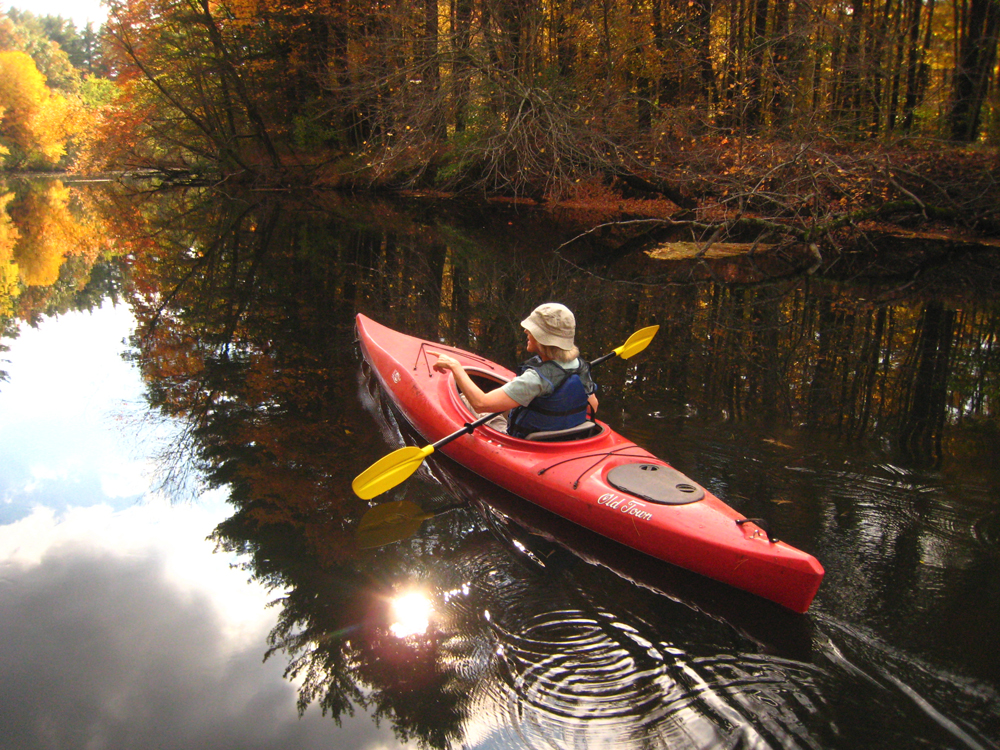

Discover a rich paddling environment just one hour northwest of Boston in the rolling Nashoba Valley! The famous, restored Nashua River and its winding tributaries are a treasure of north central Massachusetts. Nashoba Paddler's rental base is located on the river in a beautiful location you won't believe is in your own backyard! Not only will you have fun and get exercise and fresh air, but we hope we can help you come away with a better understanding and appreciation of the river. Come visit our family-owned, family-friendly business. There's something for everyone!